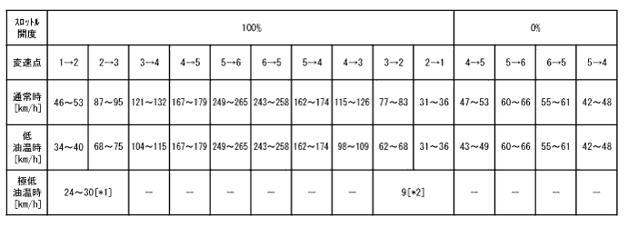
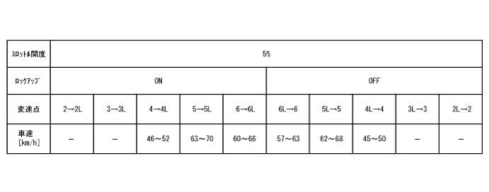
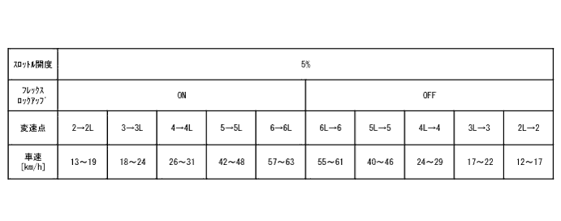

Electronically Controlled Automatic Transaxle [ECT] (U660E) Function Inspection |
| 1. Shift Lock Operation Inspection |
Move the shift lever to P.
Check that the shift lever cannot be shifted out of the P position when operated.
Check that the shift lever can be shifted out of the P position with the IG ON and the brake pedal depressed.
| 2. Shift Lock Release Button Operation Inspection |
Check that the shift lever can be shifted out of the P position when operated while pressing the shift lock release button.
| 3. Time Lag Test |
Apply the parking brake and chock the wheels.
Start the engine.
While depressing the brake pedal, shift from the N position to the D or R position at idle speed, and measure the time until a slight shock is felt.
| 4. Stall Speed Test |
Apply the parking brake and chock the wheels.
Using SST (TaSCAN), following the screen display, display the [ECU Data Monitor] screen and select [Engine Speed].
Firmly depress the brake pedal with your left foot, shift to the D position, fully depress the accelerator pedal with your right foot, and quickly read the highest engine speed.
| Engine Type | Transmission Type | Stall Speed |
|---|---|---|
| 2GR-FE | U660E | 2680±200(rpm) |
| 5. Line Pressure Test |
 |
Using SST (TaSCAN), following the screen display, display the [ECU Data Monitor] screen and select [Engine Speed].
Remove the test plug, install the automatic transmission oil pressure gauge and adapter C, and start the engine.
Apply the parking brake and chock the wheels.
Firmly depress the brake pedal and shift to the D position.
Using SST (TaSCAN), following the screen display, display the [Active Test] screen and select 3 gear in [ECT Shift Position].
Measure the line pressure at idle speed.
| Engine Condition | Line Pressure |
|---|---|
| At idle | 0.36 to 0.43{3.7 to 4.4}[MPa{kgf/cm2} ] |
Stop the engine.
Disconnect the transmission control computer connector.
Start the engine.
Firmly depress the brake pedal and shift to the D position.
Depress the accelerator pedal and measure the line pressure during the stall test.
| Engine Condition | Line Pressure |
|---|---|
| At stall | 1.16 to 1.35{11.8 to 13.7}[MPa{kgf/cm2} ] |
Stop the engine.
Connect the transmission control computer connector.
Firmly depress the brake pedal and shift to the R position.
Depress the accelerator pedal and measure the line pressure during the stall test.
| Engine Condition | Line Pressure |
|---|---|
| At idle | 0.80 to 0.95{8.2 to 9.7}[MPa{kgf/cm2} ] |
| At stall | 1.90 to 2.20{19.3 to 22.4}[MPa{kgf/cm2} ] |
Remove the automatic transmission oil pressure gauge and adapter C, and install the test plug
Using SST (TaSCAN), following the screen display, clear the DTCs (see).
| 6. Shift Schedule |



| 7. Road Test |
| Inspection Item | Inspection and Check Procedure |
|---|---|
| D Position Shift Function | Check that the transmission shifts 1st ←→ 2nd ←→ 3rd ←→ 4th ←→ 5th ←→ 6th during normal driving (typical city driving). |
| Transmission Control Switch Operation (D ←→ S Selector Switch Operation) | In the 6 gear speed range, operate the shift lever between the D position and S position, and check that the transmission shifts between 6 and 4 gear. |
| Shift Shock Level when Driving in D Position | During normal driving, check the shock level at each upshift. |
| S Position Function | With the vehicle stopped, check that the range changes 1 range ←→ 2 range ←→ 3 range ←→ 4 range ←→ 5 range ←→ 6 range (meter display) when "+" and "-" are operated in the S position. |
| Kick-down Function |
|
| Engine Braking |
|
| Shift Points at Full Throttle | Start off in the D position with the accelerator pedal fully depressed, and check that the upshift speed from 1 to 2 gear matches the shift point. |
| Lock-up Function | While driving at a constant speed in the lock-up speed range on a level road, lightly depress the accelerator pedal and check that the engine speed does not change greatly. |
| P Position Operation | Stop the vehicle on a slope (approximately 5° or more), shift to the P position, and check that the vehicle does not move when the parking brake is released. |
| Abnormal Noise, Vibration | Check for abnormal noise and vibration while driving and during shifting. |
| Uphill/Downhill Control Function |
|
| Oil Leaks | After the road test, check each part for oil leaks. |
| 8. Solenoid Operation Inspection |
TaSCAN Active Test
Turn IG OFF.
Connect SST (TaSCAN) to DLC3.
Turn the IG ON with the engine stopped.
Following the screen display, display the [Active Test] screen.
Start the engine and perform each of the following Active Tests.
| Item Name | Test Details | Restrictions |
|---|---|---|
| ECT Shift Position | Can be set to any shift position | Test possible at vehicle speed of 50km/h or less |
| Shift Linear SOL1 | Solenoid SL1 MIN current ←→ MAX current possible | Possible in the P or N position and at vehicle speed of 0km/h |
| Shift Linear SOL2 | Solenoid SL2 MIN current ←→ MAX current possible | Possible in the P or N position and at vehicle speed of 0km/h |
| Shift Linear SOL3 | Solenoid SL3 MIN current ←→ MAX current possible | Possible in the P or N position and at vehicle speed of 0km/h |
| Shift Linear SOL4 | Solenoid SL4 MIN current ←→ MAX current possible | Possible in the P or N position and at vehicle speed of 0km/h |
| Lock-up SOL | Solenoid SLU can be turned ON ←→ OFF | Possible in the P or N position and at vehicle speed of 0km/h |
| Slip Control SOL | Solenoid SLU MIN current ←→ MAX current possible | Possible in the P or N position and at vehicle speed of 0km/h |
| Lock-up Control SOL (SL) | Solenoid SL MIN current ←→ MAX current possible | Possible in the P or N position and at vehicle speed of 0km/h |
| Line Pressure SOL | Solenoid SLT can be switched between MIN current ←→ MAX current (MAX current → duty ratio 100% (line pressure at idle)) (MIN current → duty ratio 0% (line pressure at stall)) | Possible in the P or N position with the throttle fully closed (at idle) and vehicle speed of 0km/h |
| Code | Operating Condition |
|---|---|
| ○ | Energized (ON) |
| × | Not energized (OFF) |
| Shift | Gear Position | SL1 | SL2 | SL3 | SL4 |
|---|---|---|---|---|---|
| D Range | 1-speed | ○ | × | × | × |
| ↑ | 2-speed | ○ | × | ○ | × |
| ↑ | 3-speed | ○ | × | × | ○ |
| ↑ | 4-speed | ○ | ○ | × | × |
| ↑ | 5-speed | × | ○ | × | ○ |
| ↑ | 6-speed | × | ○ | ○ | × |